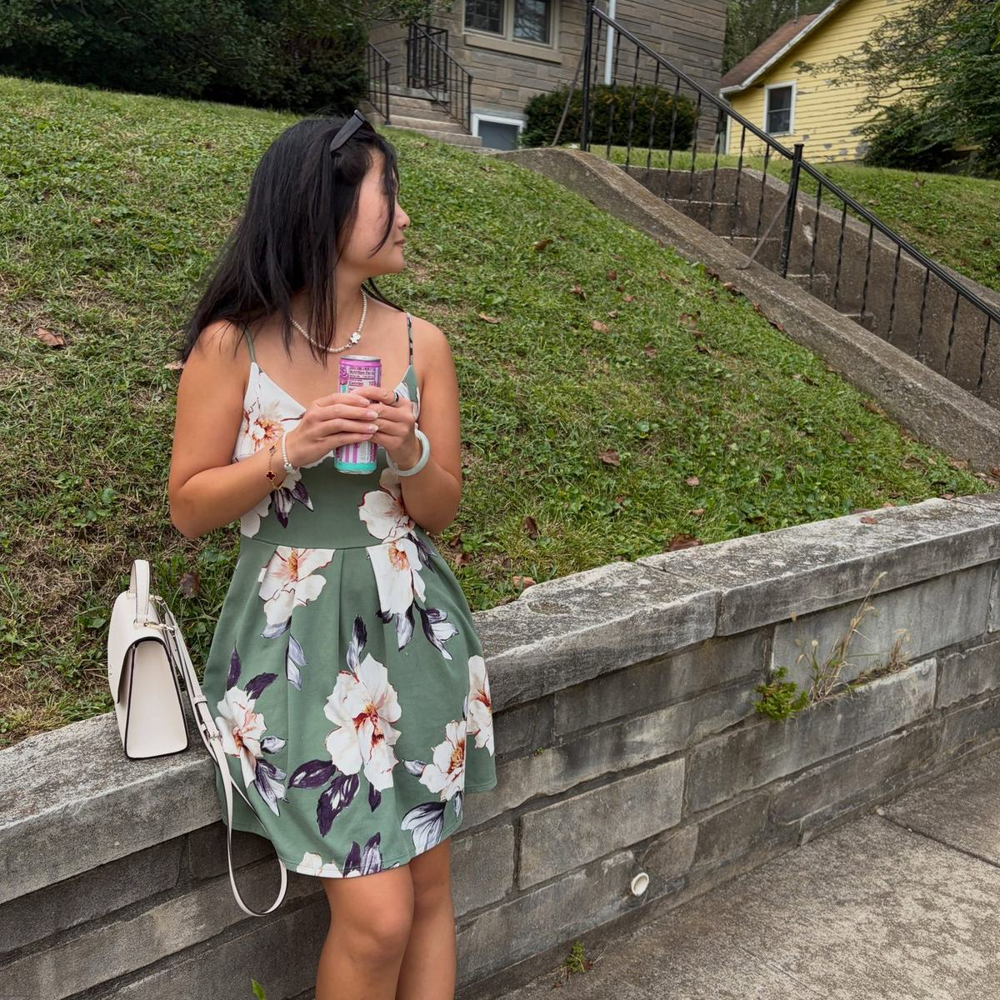

-

Lilies, indoor light. My photograph. -

Garden portrait. My photograph, also used on matchaxmoxie. -

Pink hydrangeas. From Instagram @zhao.langxi. -

White hibiscus. From Instagram @zhao.langxi. -

Floral dress on grass. From Instagram @zhao.langxi.